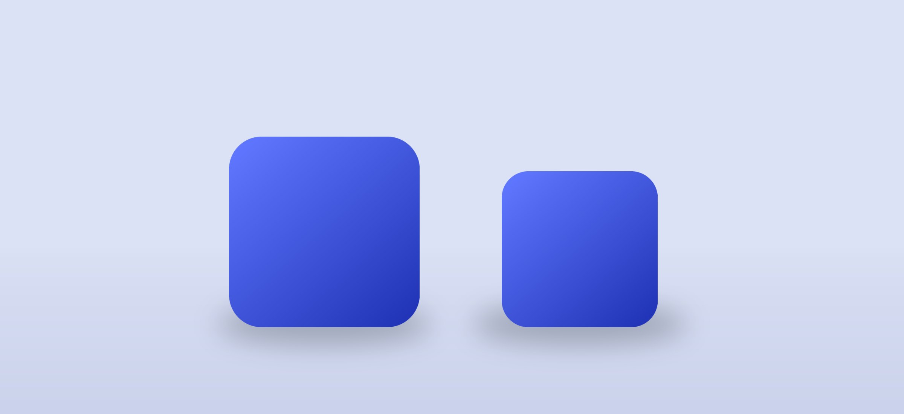

In finance, pharma and legal, the AI question is not “can it answer?” It is “can we prove where the answer came from?”
Public AI tools cannot be trusted with sensitive material, and keyword search returns documents rather than answers — with no context and no traceability. The client needed something that behaved like an assistant but could survive an audit.
Unidata Lab delivered a self-hosted assistant that answers strictly from documents the organisation has uploaded, combining retrieval-augmented generation with a lightweight web interface and a secure Docker deployment.
Uploaded PDF, DOCX and HTML files are parsed, chunked and stored with metadata in a vector database, so every fragment stays addressable. A question triggers semantic search, and the language model composes an answer only from what it retrieved — each statement linked back to its source document.
The interface keeps this visible rather than implied: users ask, read the answer, and follow the citation. Uploads are restricted to administrators, and compliance logging records what was asked and what was returned.
The model may only answer from retrieved internal documents — no open-world guessing.
Documents are parsed, chunked and stored with metadata in a vector database.
Every response links back to the document fragment it came from.
Only administrators add material; users query it.
Questions and answers are recorded for audit.
Docker deployment inside the client's own environment — data never leaves.